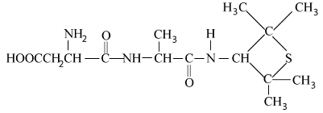

Food Preservative, Artificial sweating agents
Preservatives
During the storage and distribution of food, several undesirable changes occur in flavour, colour, texture and appetitic appeal. To avoid these changes some chemicals are added to food. These chemicals are known as preservatives.
In other words the chemicals which are used to protect food from microbes actions, ie, which arrest the process of fermentation.
acidification and any other decomposition of food are known as food preservatives. Some important examples of food preservatives are given below :
-
Carboxylates such as sodium benzoate \( (C_6 H_5 COONa) \) are commonly used to preserve food. Sodium benzoate is used as preservative in soft drinks and acidic foods.
It is metabolised by conversion to hippuric acid \( (C_6 H_5 CONHCH_2 COOH) \) which is ultimately excereted with urine. Sodium and calcium propionates are used as preservatives in breads and cakes. -
Vitamin E is naturally occurring food preservative found in vegetable oil.
-
The jams and squashes-pickles are preserved by adding sodium metabisulphite \( (Na_2 S_2 O_5) \) or potassium metabisulphite, \( K_2 S_2 O_5 \) . The sulphurous acid present in it inhibit the growth of microbes.
\( \begin{align} Na_2 S_2 O_5 \rightarrow Na_2 SO_3 + SO_2 \\\\[3pt] SO_2 + H_2O \rightarrow H_2 SO_3 \end{align} \) -
In cheese, baked food, pickles and meat, sorbic acid and its salts are used as preservative.
-
Epoxides and ethyl formates are used for the preservation of species, nuts and dried fruits
Artificial Sweetening Agents
chemicals which are not sugars (crbohydrates) but give sweetening effect to the food and ehance its odour and flavour are called artificial sweetening agents.
Important artificial sweeteners are :
-
Saccharin It is the first discovered artificial sweetener. It is very popular sweetening agent. It is about 300 times sweeter than cane sugar. It is non-biodegradable compound but has no calorific value.
In market, it is available in the form of its sodium or calcium salt as these are water soluble. Saccharin has proved to be a life saver for countless diabetics and is of great value to people who need to control intake of calories.

-
Aspartame It is an another artificial sweetener. It is methyl ester of the dipeptide obtained from phenylalanine and aspartic acid. It's structure is
\( HOOC - \underset{aspartame}{CH_2} - {\overset{ \overset{NH_2} |} CH} - - \overset{ \overset{O} ||}{C} - NH{\overset{ \overset{COOCH_3} |} C} HCH_2C_6H_5 \)
It is also known as "Nutra sweet". It is about 180 times sweeter than cane sugar. The only limitation for it is that at baking or higher temperatures, it gets decomposed, so its use is limited only in cold foods and soft drinks. -
Alitame It is more stable than aspartame at high temperature. it is about 2000 times sweeeter than sucrose.
 -
Sucralose It is a trichloro derivative of sucrose. it is about 650 times sweeter than cane sugar. It is a zero calorie sugar.
-
Cyclamate It is also an artificial sweetener. Chemically, it is N-cyclohexylsulphamate. It is only twenty times sweeter than cane sugar
-
Dulcin (a urea sweetener) It is only twenty five times sweeter than cane sugar. It has the following structure,
Other examples of this category are nitro anilines, dihydrochalcones (DHC)